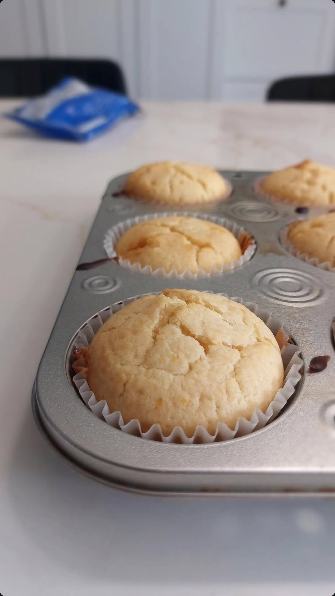

Muffin Recipes

Description
Basic Muffin with no toppings, soft and sweet.
Can be made within 10 min + 15-20 min of bake time.
Ingredients
- 2 cups of flour
- 1/2 cup brown sugar
- 2 teaspoons baking powder
- 1/2 teaspoon salt
- 3/4 cups milk
- 1/2 cups oil
- 2 large eggs
Instructions
- Preheat oven to 350F. Line a muffin pan with paper liners; set aside
- In a small bowl, whisk the flour, sugar, baking powder, and salted together
- In a medium bowl, whisk the milk, oil, eggs together until well combined
- Mix flour mixture to the wet mixture and stir with a spatula until combined
- Divide the batter evenly to each of the muffin cups.
- Bake for 20-25 min, use toothpick to check if insides are moist
- Take muffin out, and wait to coli
- Enjoy!
Home